15 luồng, 109 bước, chụp trực tiếp từ bản mock giai đoạn 1. Mỗi bước dẫn chiếu tới use case và có link mở đúng màn hình trong mock. Màn hình khách và quán chụp trên điện thoại; màn hình quản trị chụp trên máy tính.
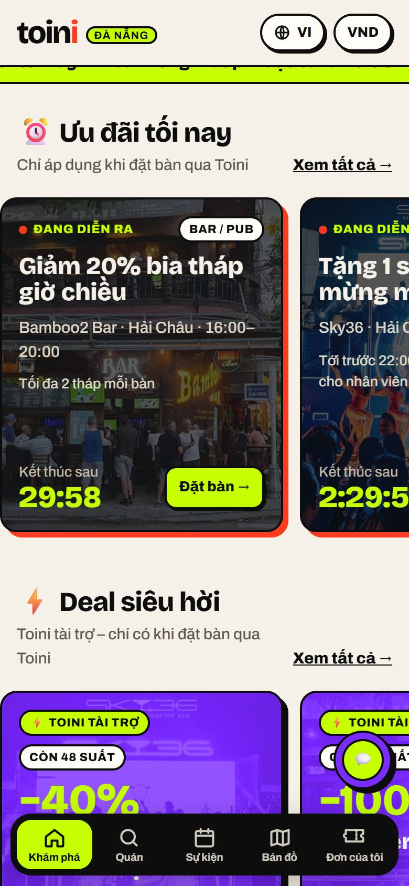
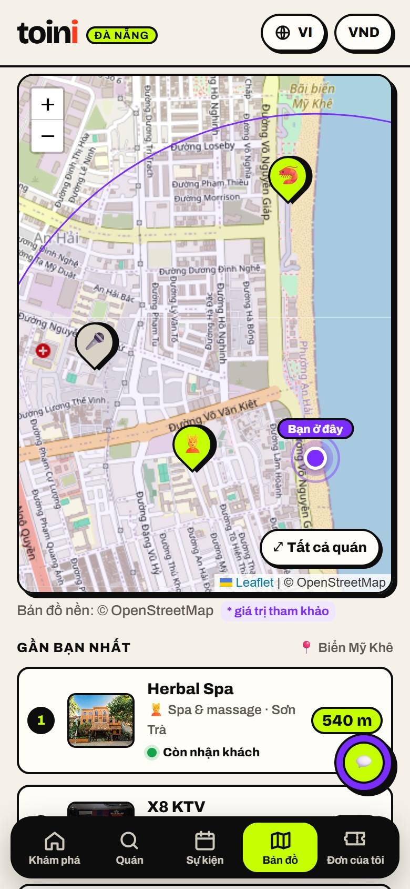
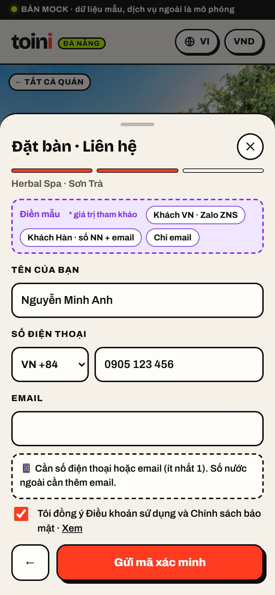
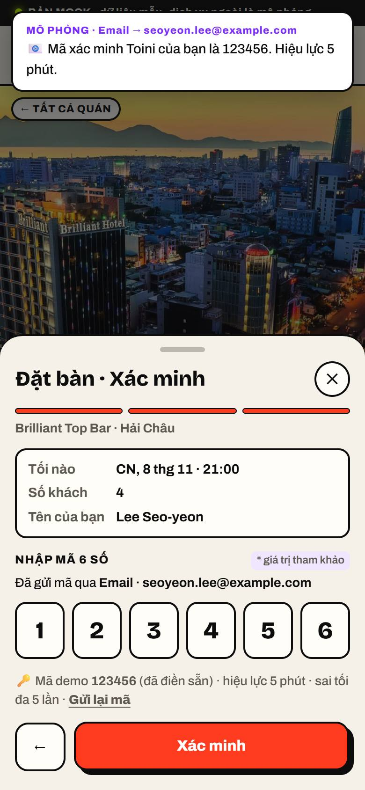
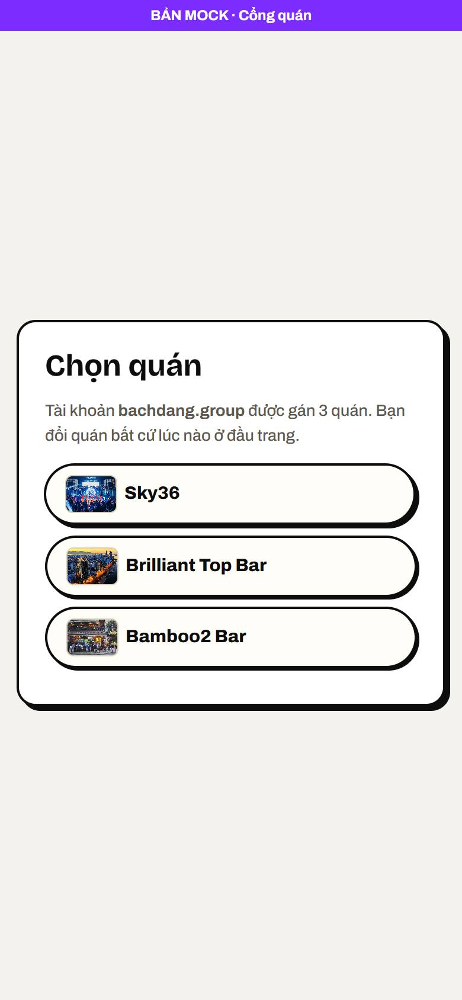
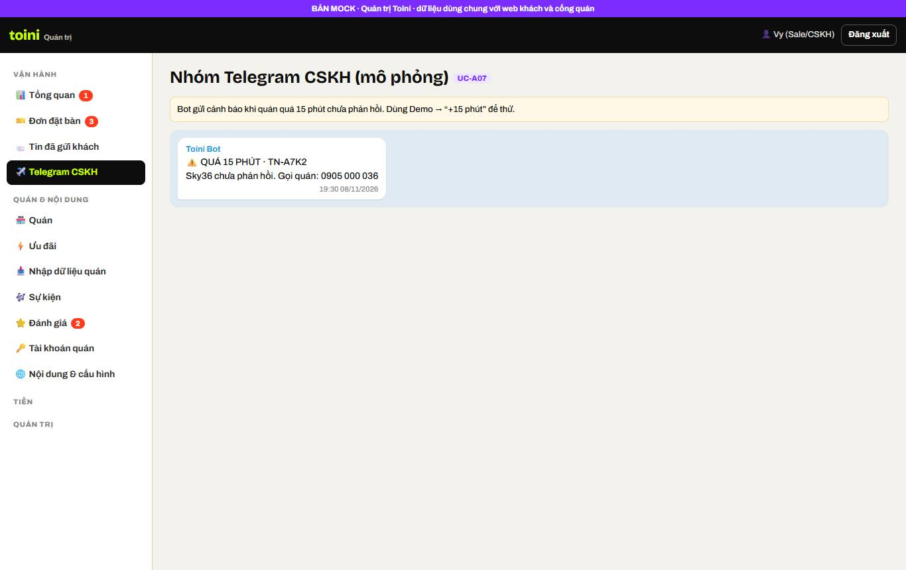
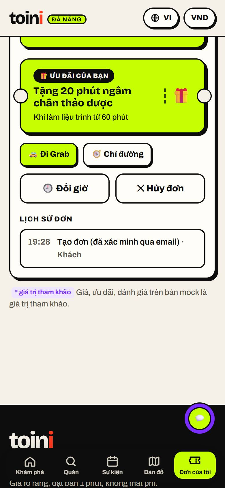
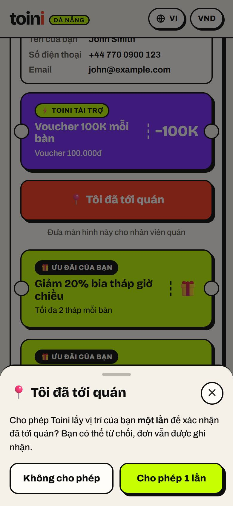
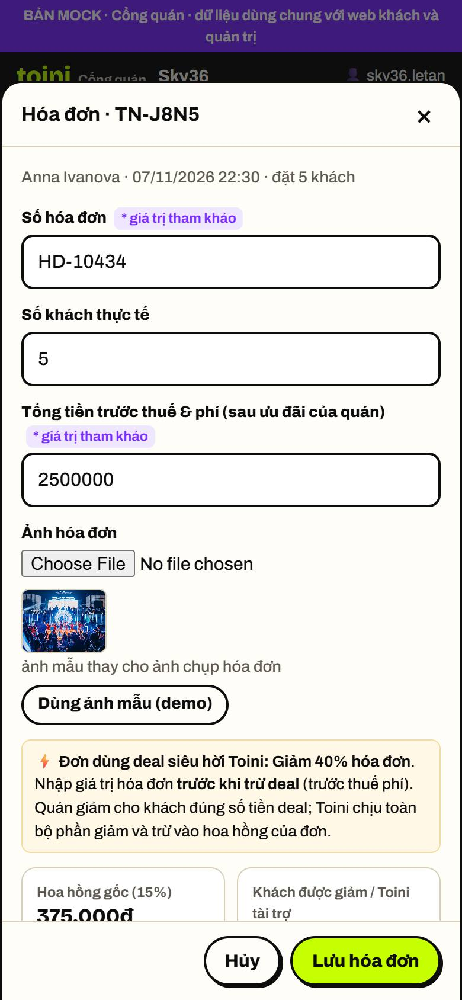
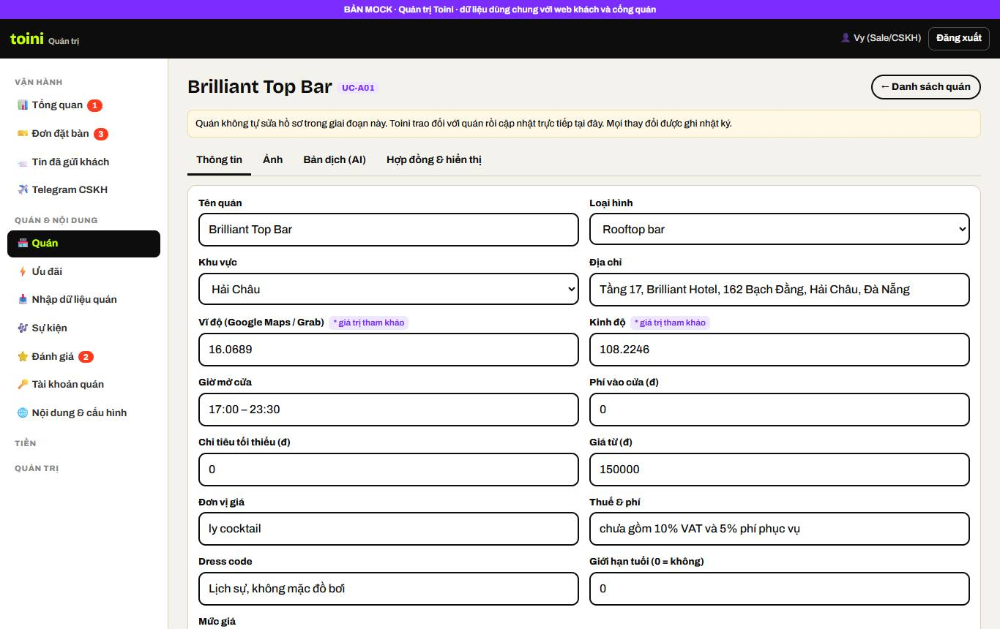
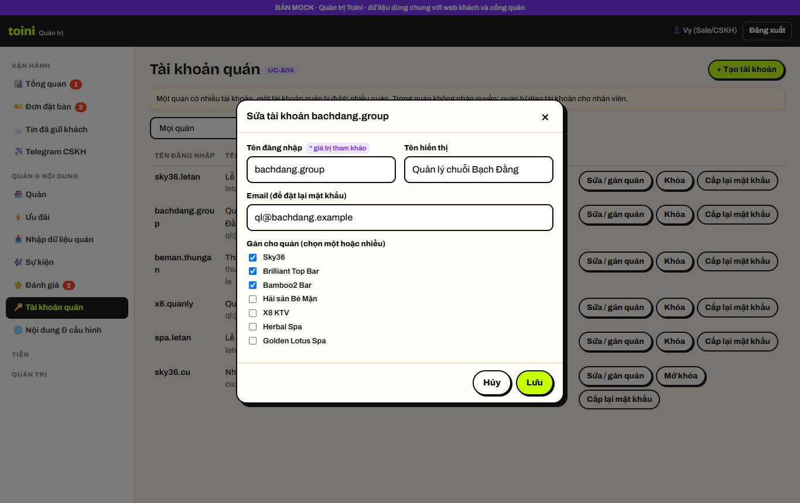
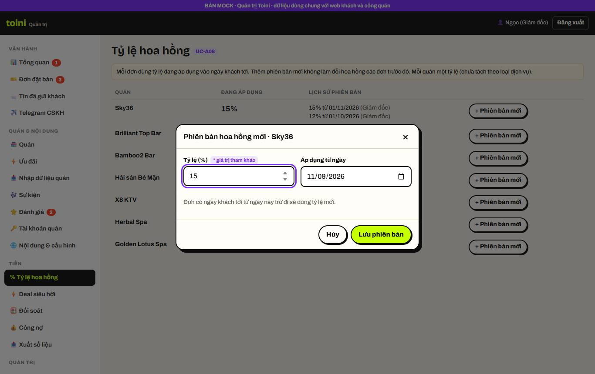
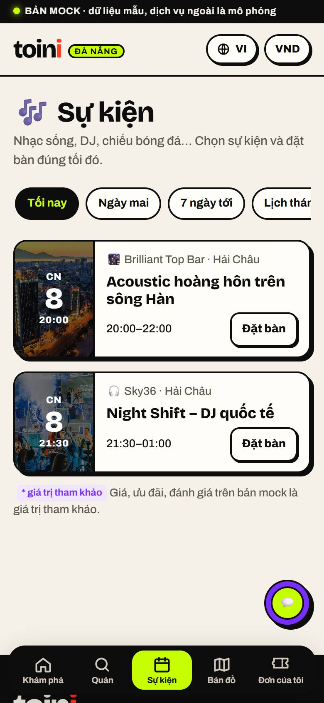
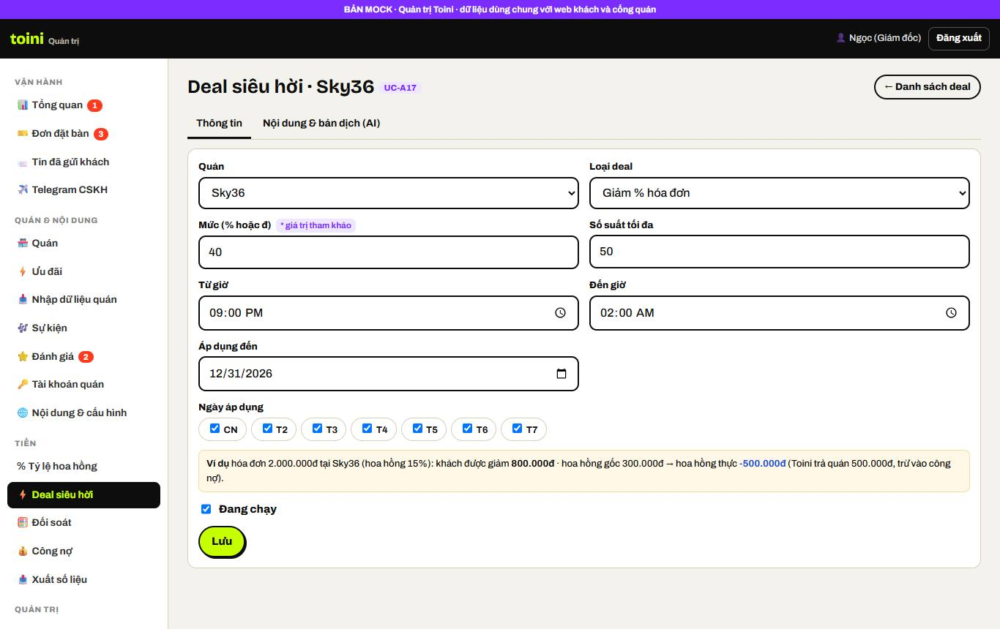
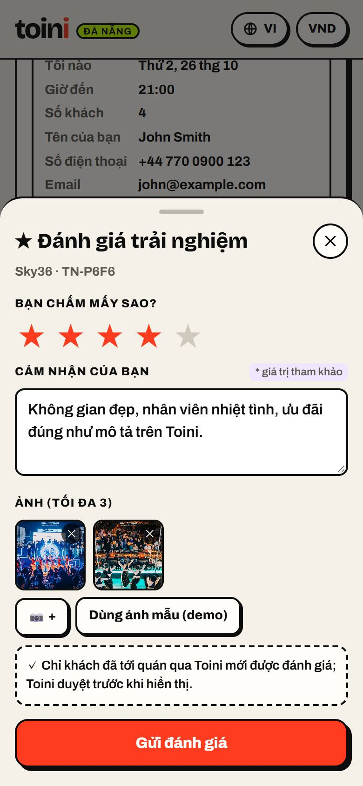
Khách mở web, đổi ngôn ngữ/tiền tệ, lọc quán, xem ảnh, giá, bản đồ và gọi Grab.
Khách chưa có quán cụ thể: đặt vị trí, xem ghim các quán quanh mình, bấm ghim xem nhanh rồi vào trang quán.
Khách đặt bàn không cần tài khoản, nhận mã qua Zalo ZNS, đơn được tạo và quán nhận tin Telegram.
Số nước ngoài bắt buộc có email; số VN gửi ZNS, ZNS lỗi thì chuyển SMS; mọi tin được ghi lại.
Nhân viên quán đăng nhập, chọn quán, xác nhận hoặc từ chối đơn; khách thấy kết quả ngay.
Quá 15 phút CSKH được cảnh báo để gọi quán; quá 30 phút đơn tự hủy và khách được báo.
Đổi giờ thì đơn quay về chờ quán xác nhận; hủy trước giờ đặt không mất phí.
Khách bấm “Tôi đã tới quán”, đồng ý chia sẻ vị trí 1 lần (tùy chọn), đưa màn hình ưu đãi cho nhân viên.
Quán nhập hóa đơn, hệ thống tính hoa hồng, kế toán đối soát, kỳ tuần được chốt, ghi nhận quán đã trả và xuất số liệu.
Toini cập nhật hồ sơ quán và ưu đãi; bấm Dịch bằng AI, sửa và duyệt bản nháp; nhập dữ liệu ban đầu từ file.
Toini cấp tài khoản cho quán (nhiều–nhiều), phân vai trò nhân viên; quán bật/tắt nhận khách từng tối.
Giám đốc đặt tỷ lệ hoa hồng có phiên bản, xem nhật ký mọi thao tác; khách nhắn Toini qua ứng dụng chat quen dùng.
Khách xem sự kiện tối nay, lịch tháng, đặt bàn gắn với sự kiện; quán thấy khách đặt vì sự kiện nào; Toini quản lý sự kiện.
Toini cấu hình deal (% hóa đơn hoặc voucher); khách đặt với deal; quán nhập hóa đơn, hệ thống tính phần Toini tài trợ và hoa hồng thực (có thể âm), trừ vào công nợ.
Khách đã tới quán chấm sao, viết bình luận, đính kèm ảnh; Toini duyệt; đánh giá hiện trên trang quán.
Use case nào được thể hiện ở bước evidence nào.
| Khách | ||
| UC-K01 | Chọn ngôn ngữ và loại tiền | E01-05 E01-06 E01-07 E10-07 |
| UC-K02 | Xem trang chủ và tìm quán | E01-01 E01-02 E01-03 E01-04 E10-03 E13-01 |
| UC-K03 | Xem chi tiết quán | E01-07 E01-08 E01-09 E01-10 E01-11 E01-12 E02-05 E14-04 E15-05 |
| UC-K04 | Đi tới quán bằng Grab hoặc Google Maps | E01-12 E01-13 |
| UC-K05 | Đặt bàn | E03-01 E03-02 E03-04 E04-01 E13-05 E14-05 |
| UC-K06 | Xác minh số điện thoại hoặc email bằng mã OTP | E03-03 E04-01 E04-02 E04-03 |
| UC-K07 | Nhận kết quả và tra cứu đơn | E03-05 E03-06 E05-07 E05-08 E06-05 E07-01 E13-06 |
| UC-K08 | Đổi giờ hoặc hủy đơn | E07-02 E07-03 E07-04 E07-05 E07-06 |
| UC-K09 | Báo “Tôi đã tới quán” và dùng ưu đãi | E08-01 E08-02 E08-03 |
| UC-K10 | Nhắn tin cho Toini qua ứng dụng chat | E12-04 |
| UC-K11 | Tìm quán gần tôi trên bản đồ | E02-01 E02-02 E02-03 E02-04 E02-05 E02-06 |
| UC-K12 | Xem sự kiện và đặt bàn theo sự kiện | E13-01 E13-02 E13-03 E13-04 E13-05 E13-06 E13-07 |
| UC-K13 | Đánh giá sau khi đi | E15-01 E15-02 E15-03 E15-05 |
| UC-K14 | Đặt bàn với deal siêu hời Toini | E14-03 E14-04 E14-05 E14-06 E14-07 |
| Quán | ||
| UC-Q01 | Đăng nhập và chọn quán | E05-01 E05-02 E11-05 E11-06 E11-08 |
| UC-Q02 | Bật hoặc tắt nhận khách theo từng tối | E11-07 |
| UC-Q03 | Nhận thông báo đơn mới | E03-07 E03-08 E07-06 |
| UC-Q04 | Xác nhận hoặc từ chối đơn | E03-08 E05-03 E05-04 E05-05 E13-07 |
| UC-Q05 | Xem lịch đơn theo ngày | E05-06 |
| UC-Q06 | Báo “Khách đã tới” | E08-04 |
| UC-Q07 | Nhập hóa đơn | E09-01 E09-02 E09-03 E14-07 |
| UC-Q08 | Xem công nợ hoa hồng | E09-09 |
| Quản trị Toini | ||
| UC-A01 | Quản lý quán và hồ sơ quán | E10-01 E10-02 E10-03 E10-04 E10-05 E10-06 E10-07 E11-08 |
| UC-A02 | Nhập dữ liệu quán ban đầu từ file mẫu | E10-10 |
| UC-A03 | Quản lý ưu đãi của quán | E10-08 E10-09 |
| UC-A04 | Quản lý tài khoản quán | E11-01 E11-02 E11-05 |
| UC-A05 | Quản lý nhân viên Toini và vai trò | E11-03 E11-04 |
| UC-A06 | Theo dõi đơn và hỗ trợ khách | E04-04 E06-03 E06-04 |
| UC-A07 | Xử lý đơn quán chậm phản hồi | E06-01 E06-02 E06-04 |
| UC-A08 | Thiết lập tỷ lệ hoa hồng | E12-01 E12-02 |
| UC-A09 | Đối soát hóa đơn | E09-04 E09-05 |
| UC-A10 | Công nợ và ghi nhận thanh toán | E09-06 E09-07 E14-08 |
| UC-A11 | Xuất số liệu theo mẫu ThucTe | E09-08 |
| UC-A12 | Quản lý nội dung chung và cấu hình | E10-11 |
| UC-A13 | Xem nhật ký thao tác | E12-03 |
| UC-A14 | Thiết lập trần gửi tin và chặn lạm dụng | E04-05 |
| UC-A15 | Quản lý sự kiện | E13-08 E13-09 |
| UC-A16 | Kiểm duyệt đánh giá | E15-04 |
| UC-A17 | Quản lý deal siêu hời | E14-01 E14-02 |
| Hệ thống tự động | ||
| UC-S01 | Gửi tin cho khách theo kênh phù hợp | E03-03 E03-04 E04-02 E04-03 E04-04 E05-04 E07-04 |
| UC-S02 | Hẹn giờ theo trạng thái đơn | E06-01 E06-05 |
| UC-S03 | Tính hoa hồng | E09-02 E09-03 E14-02 E14-07 |
| UC-S04 | Chốt kỳ đối soát hằng tuần | E09-06 E14-08 |
| UC-S05 | Cập nhật tỷ giá | E01-06 |
| UC-S06 | Chống bot và giới hạn gửi tin | E04-05 |
| UC-S07 | Ghi nhật ký thao tác | E12-03 |
| UC-S08 | Sao lưu dữ liệu hằng ngày | Chạy ngầm trên máy chủ, không có màn hình. Nghiệm thu bằng kiểm tra bản sao lưu hằng ngày và chạy thử khôi phục. |
| UC-S09 | Lưu lịch sử đặt bàn theo số điện thoại và email | E03-04 |
| UC-S10 | Gửi email mời đánh giá | E15-01 |